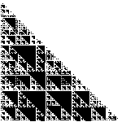
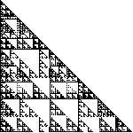
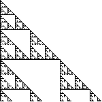
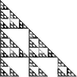

3. (mod 6) Shading the boxes of Pascal's triangle with numbers congruent
to




0 (mod 6)
1, 2, 3, 4, or 5 (mod 6)
1, 3, or 5 (mod 6)
1, 2, 4, or 5 (mod 6)
First note H1 = {0,2,4} is a subgroup isomorphic to
Z3, so
Z6/H1 is isomorphic to Z2
and the coset 1 + H1 corresponds to
1 in Z2. This explains the third picture.
Next note H2 = {0,3} is a subgroup isomorphic to
Z2, so
Z6/H2 is isomorphic to Z3
and the cosets 1 + H2 and 2 + H2 correspond to
1 and 2 in Z3. This explains the fourth picture.